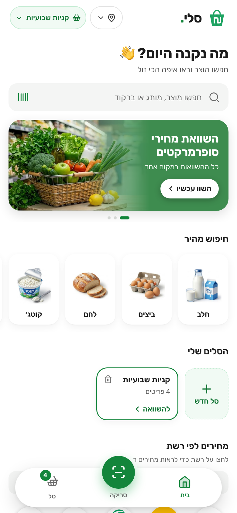
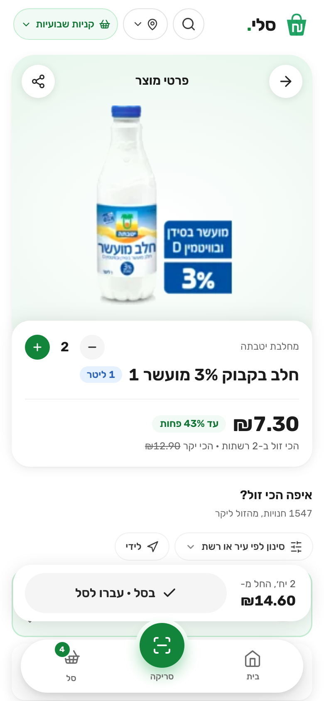
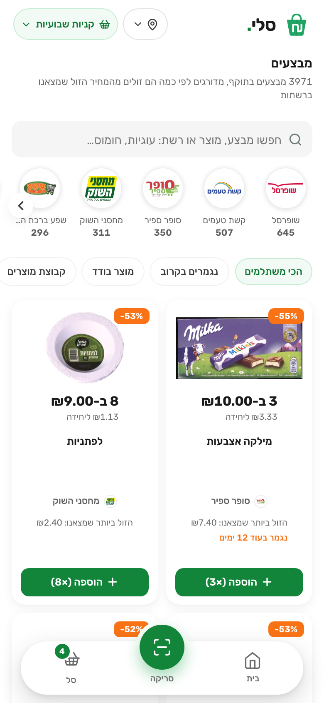
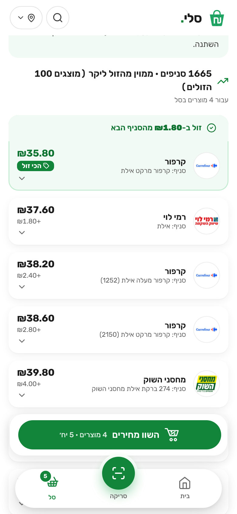

What the site does, feature by feature: who uses it and what counts as finished.

HomeSearch, banner, quick search
ProductEvery store, cheapest first
DealsOnly real bargains
BasketTotal at each storeThe same basket costs a different amount at every chain, and there is no quick and comfortable way to see where it is cheapest. Comparison sites exist (CHP, MySupermarket, Pricez); comparing a whole basket, promotions included, is what they handle least well.
Builds a regular basket and wants the cheapest chain for all of it.
Scans a barcode at the shelf to see if it is cheaper elsewhere.
Wants the cheapest price close to home.
What each one does, and what counts as finished.
| Feature | What it does | Done when |
|---|---|---|
| Home and search | A greeting, search with a scan button, a three-slide banner, “quick search” with ten product photos, the user’s baskets and a Deals strip with fresh picks every day. Words in any order, spelling mistakes forgiven. Photo cards show where it is cheapest and the price per 100 g or litre. | A new visitor starts a search in one tap. |
| Product page | The price at every store, cheapest first. Filter by city (the chain list follows the city) and chain, or “near me” (15 km, closer first at equal prices). Address, Waze or Google Maps, delivery link, the chain’s own promotion, and a warning on an old price. | The cheapest store, the saving and the freshness are clear at a glance. |
| Basket | The total at every store, cheapest first, stores missing an item ranked lower and flagged. Promotions are applied (“2 for ₪10”, also across several products) and shown per line. Several named baskets, swipe to remove, move items, undo, and a quiet price-change check. | A basket of up to 100 items compares in about a second, and a store dearer on the shelf can win once its deal applies. |
| Deals | Every promotion is compared with the cheapest shelf price found; only those 10% to 60% cheaper are shown, searchable, filterable by chain and sortable, with the list loading as the user scrolls and pictured deals first. A group deal lets the user pick a product; adding puts exactly the right number of units in the basket. | Deals shows real bargains only, and going back returns to the same card. |
| Barcode scan | The camera reads a barcode and opens the product. A barcode can also be typed. | A real product opens in seconds; the picture never leaves the phone. |
| Pictures, trust and small print | Pictures from Shufersal’s catalogue, used only when they are that exact product. Every page has its own title, description and link preview for search engines and sharing. An About page: where prices come from, “for illustration and comparison only”, privacy, credits, contact. A short first-visit tour. | No wrong pictures; the disclaimer is one tap away on every page. |
| Map view COMING NEXT | After building a basket, open a map like Airbnb’s: each supermarket is a pin with your whole basket’s price there, the cheapest highlighted, the list moving with the map. Store positions and basket totals already exist. | A Map toggle on the basket page shows correct pins and navigation. |
| Rule | Why |
|---|---|
| Always cheapest first | It is what the user came to see, in both the store list and the basket. |
| Prices under 10 agorot, wholesale stores and short item codes are ignored | Fake prices, shops not for shoppers, and chain-internal numbers that mean different products elsewhere. |
| A promotion changes a total only when it is safe | Clear “N for X” deals with promotion data under 7 days old. Anything unclear stays at the shelf price, so a saving is never overstated. |
| Baskets and location stay with the user | No accounts. Baskets live in the browser; location is rounded to about 1 km and never stored. |
Not included, on purpose: accounts, ordering and payment, club prices and coupons in totals, price alerts and a history chart (tried, then removed to keep the product page simple).